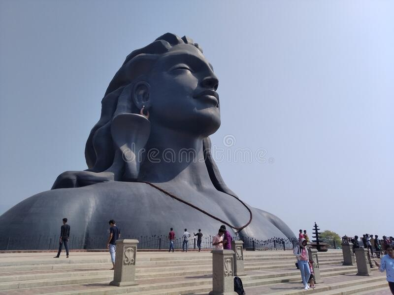
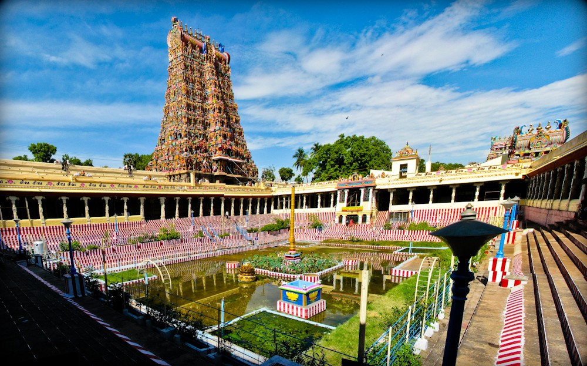
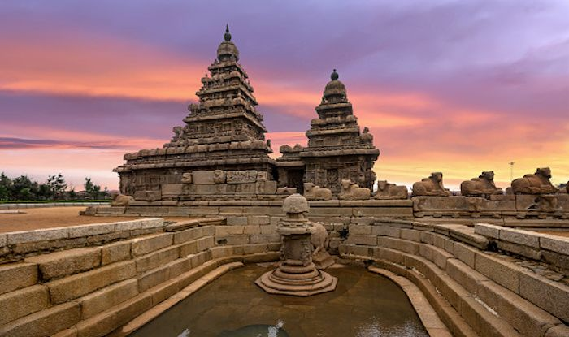

COIMBATORE
Coimbatore is a city in the south Indian state of Tamil Nadu. To the northwest is the centuries-old, Dravidian-style Arulmigu Subramaniyaswami Temple, Marudamalai. The colorful and intricately carved Arulmigu Patteeswarar Swamy Temple lies southeast of here. In the center, the Gass Forest Museum has a huge collection of preserved animals and tree trunks. Southeast, birds and butterflies inhabit Singanallur Lake.
KODAI KANAL

Kodaikanal is a hill town in the southern Indian state of Tamil Nadu. It’s set in an area of granite cliffs, forested valleys, lakes, waterfalls and grassy hills. At 2,000 meters above sea level, the town centers around man-made, star-shaped Kodaikanal Lake, bordered by evergreen forest. Rowing boats can be hired, and hikers and cyclists follow the 5k Lake Road path around the shore.
MADHURAI
Madurai is an energetic, ancient city on the Vaigai River in the South Indian state of Tamil Nadu. Its skyline is dominated by the 14 colorful gopurams (gateway towers) of Meenakshi Amman Temple. Covered in bright carvings of Hindu gods, the Dravidian-style temple is a major pilgrimage site. Millions attend the processions and ceremonies of April's Chithirai Festival celebrating Meenakshi and Lord Vishnu.
MAHABALIPURAM
Mamallapuram, or Mahabalipuram, is a town on a strip of land between the Bay of Bengal and the Great Salt Lake, in the south Indian state of Tamil Nadu. It’s known for its temples and monuments built by the Pallava dynasty in the 7th and 8th centuries. The seafront Shore Temple comprises 3 ornate granite shrines. Krishna’s Butter Ball is a massive boulder balanced on a small hill near the Ganesha Ratha stone temple.
OOTY

Ooty (short for Udhagamandalam) is a resort town in the Western Ghats mountains, in southern India's Tamil Nadu state. Founded as a British Raj summer resort, it retains a working steam railway line. Other reminders of its colonial past include Stone House, a 19th-century residence, and the circa-1829 St. Stephen’s Church. Its 55-acre Government Botanical Garden lies on the slopes of Doddabetta Peak.
RAMESHWARAM

Rameswaram is a town on Pamban Island, in the southeast Indian state of Tamil Nadu. It’s known for Ramanathaswamy Temple, a Hindu pilgrimage site with ornate corridors, huge sculpted pillars and sacred water tanks. Devotees bathe in the waters of Agni Theertham, off the beach east of the temple. Gandamadana Parvatham is a hill with island views. A chakra (wheel) here is said to bear an imprint of Lord Rama’s feet.